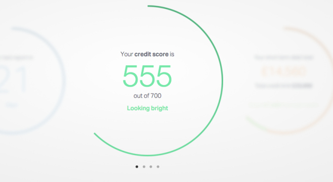

CREDIT.
When it assesses whether or not you can afford a mortgage, a bank will score your creditworthiness based on information it can gather from your credit history or credit file as well as your bank statements
Your perspective lender is looking for evidence of past borrwoing behaviour to assess whether or not you will be a well-behaved borrower going forward.
- Pay your bills on time. Any defaults in payments, even as little as £5 stays on and damages your report for 6 years. Missing your last payment on an account will cost you about 130 points according to Experian. For budgeting tips, read our guide on how to budget
- Add rent to your credit history. You can now ask for rental payments to be added to your Experian credit score to demonstrate that you are a reliable rent payer. You need to actively sign up to do this by paying rent through a company called Credit Ladder, which passes your money to your landlord or letting agent
- Break up with your ex…financially. Break any links with ex-partners and former flatmates with whom you have shared joint accounts or joint bills. Being financially tied to someone with a poor credit history , this will reflect negatively on yours.
- If you have moved to the UK from abroad, get a copy of your credit record from the main agency in your home country. Contact Experian and let them know that you are willing to provide a copy of your credit history
- Reduce your debts. Pay down any debt you have as much as possible before applying for a mortgage. For more tips on how you can put more money aside each month to pay off more debt, head over to our budgeting tips
Here are more tips on how you can improve your credit:
Have a look at your credit score and report, for free

ClearScore credit report
Take a quick look at your creditscore with easy form to complete. We recommend ClearScore.
Go to ClearScore..